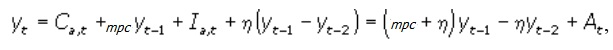
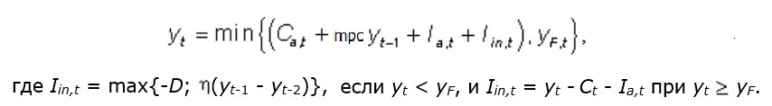

В отличие от теории общего экономического равновесия (ОЭР), которая объясняет процесс согласования планов экономических субъектов при данных производственных возможностях и потребительских предпочтениях, теория экономического цикла исследует причины, вызывающие изменение экономической активности общества. Обобщающим показателем величины и направления изменения экономической активности служит уровень использования производственного потенциала страны.
Направление и степень изменения показателя или совокупности показателей, характеризующих развитие народного хозяйства, определяют как экономическую конъюнктуру. Поэтому теорию экономических циклов называют также теорией конъюнктуры.
Как было отмечено в разделе 4.1 под экономическим циклом подразумевается период развития экономики между двумя одинаковыми состояниями конъюнктуры. И проблематика теории экономических циклов обусловливает применение сложных динамических моделей с использованием дифференциальных уравнений.
Модель взаимодействия мультипликатора и акселератора основывается на кейнсианской концепции функционирования макроэкономических рынков и описывает процесс перехода от одного равновесного состояния к другому после изменения экзогенных параметров, дополняя тем самым анализ сравнительной статики. Несмотря на то, что в модели время учитывается в явном виде, она остается краткосрочной: приращение объема инвестиций, как и в статических моделях, увеличивает только совокупный спрос; воздействие инвестиций на совокупное предложение через вступление в строй новых производственных мощностей не учитывается; это ограничение снимается в моделях экономического роста. Вернется ли экономика в этих условиях к равновесию после экзогенного импульса или нет, будет ли процесс приспособления к новой обстановке монотонным или колебательным - это предмет исследования рассматриваемой модели.
Модель Самуэльсона-Хикса Данная модель включает в себя только рынок благ, и поэтому уровень цен и ставка процента предполагаются неизменными; объем предложения благ совершенно эластичен.
Объем потребления домашних хозяйств в текущем периоде зависит от величины их дохода в предшествующем периоде
Ct = Ca,t + mpcYt-1 .
где Ca - автономное потребление.
Предприниматели осуществляют автономные инвестиции, объем которых при заданной ставке процента фиксирован, и индуцированные инвестиции, зависящие от прироста совокупного спроса в предшествующем периоде
It = Ia,t + η (Yt-1 - Yt-2).

где At = Сa,t + Ia,t .
Данное уравнение является неоднородным конечно-разностным уравнением второго порядка, характеризующим динамику национального дохода во времени.
В рассматриваемой модели возникает ряд противоречий, которые объясняются тем, что в модели не были учтены два обстоятельства. Во-первых, произведенный национальный доход не может существенно превысить национальный доход полной занятости; этим ограничивается амплитуда колебаний объема национального дохода сверху. Во-вторых, объем отрицательных индуцированных инвестиций не может превысить сумму амортизации; это ограничивает амплитуду колебания национального дохода снизу.
В результате модель взаимодействия мультипликатора и акселератора принимает вид

Модель Тевеса Т. Тевес дополнил модель Самуэльсона-Хикса рынком денег, который в соответствии с моделью IS-LM взаимодействует на рынок благ через ставку процента.
Посредством модели Тевеса можно показать возможности банковской системы в регулировании конъюнктурных колебаний экономической активности.
Несмотря на то что в модели Тевеса присутствует рынок денег, в ней, как и в модели Хикса-Самуэльсона, причиной конъюнктурных циклов выступают экзогенные изменения спроса на блага. Монетарные концепции экономических циклов связывают колебания экономической активности с изменениями в кредитно-денежном секторе.
Основоположником монетарной концепции экономических циклов считается Р. Хаутри. По его представлению, исходным пунктом экономического цикла является рост предложения кредита со стороны банковской системы. Далее следуют снижение ставки процента, рост инвестиций и совокупного спроса; так возникает фаза подъема, которая сопровождается ростом уровня цен. Со временем экономический подъем прекращается под воздействием двух основных факторов: внутреннего и внешнего. Первый сводится к исчерпанию избыточных резервов коммерческих банков; второй - к сокращению валютных резервов страны вследствие увеличения импорта и сокращения экспорта из-за повышения уровня цен. Оба названных фактора создают дефицит на рынке денег, и ставка процента начинает повышаться, а объем инвестиций - снижаться. Ухудшение инвестиционного климата на этой фазе развития цикла связано также с тем, что к концу фазы подъема разрыв между темпами роста уровня цен и ставки номинальной зарплаты сокращается. В результате начинаются обратные процессы: спад производства и занятости, снижение денежной ставки номинальной зарплаты и уровня цен, рост чистого экспорта, увеличение валютных резервов и денежной базы. Тем самым подготавливается основа для очередной кредитной экспансии банковской системы.
Модель Калдора В модели взаимодействия мультипликатора и акселератора конъюнктурные колебания в экономике возникают вследствие экзогенного импульса - изменения величины автономного спроса или количества денег. В модели Калдора причинами циклического развития экономики являются эндогенные факторы. В основе этой модели лежат специфические функции инвестиций и сбережений.
Н. Калдор исходил из того, что в коротком периоде объем инвестиций зависит от величины реального национального дохода. Причем зависимость эта нелинейна. При низком уровне занятости рост национального дохода почти не увеличивает инвестиции, так как имеются свободные производственные мощности. Малоэластичны инвестиции по доходу и в периоды избыточной занятости и высокого уровня национального дохода, так как в такие периоды инвестирование связано с большими издержками из-за высоких ставок процента и заработной платы. В фазе подъема, т.е. при переходе от низкой к высокой занятости, эластичность инвестиций по доходу больше единицы в связи с ростом реального капитала.